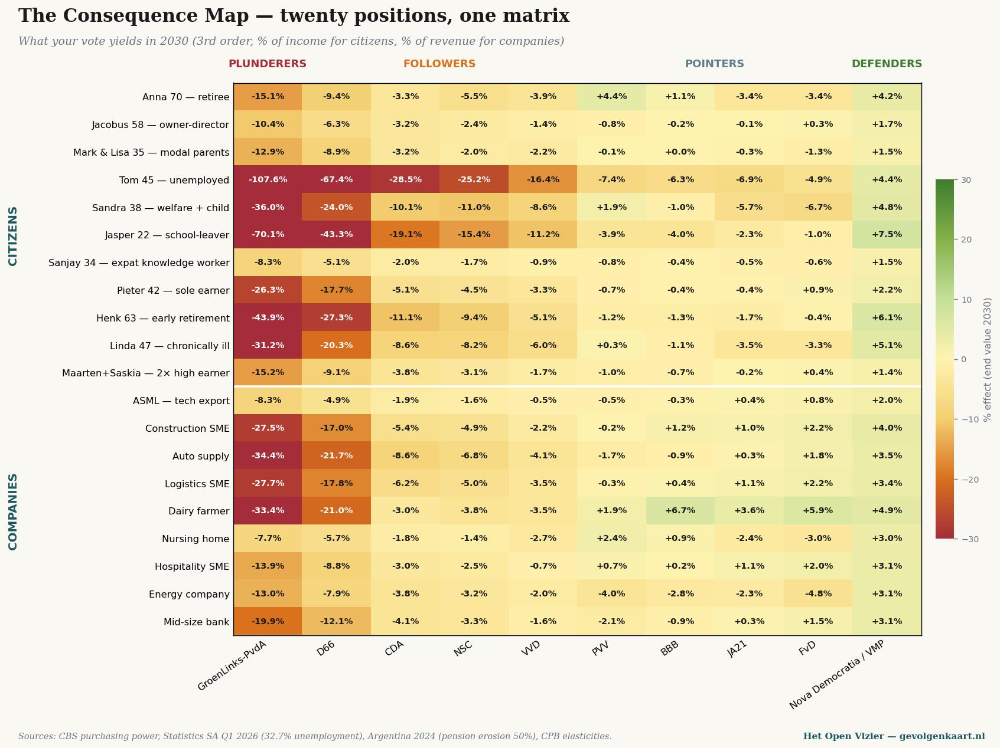

DIAGNOSTIC · PAYS-BAS, JUIN 2026
Le Grand Pillage
Cinq parties sur la façon dont les Pays-Bas perdent leur prospérité — diagnostic, mécanique, issue, paysage politique.
Lire les cinq parties →
MANIFESTE · CARTE DES CONSÉQUENCES I
La Carte des conséquences
Pourquoi la boussole de vote ne vous dira jamais ce que vous votez réellement — et ce qui doit prendre sa place

CARTE DES CONSÉQUENCES III · PAYS-BAS
Analyse silencieuse
Pour ceux qui votent PRO, GroenLinks-PvdA ou D66 — vingt positions, une matrice

DIE KONSEQUENZKARTE · ALLEMAGNE
Die Konsequenzkarte
Le même modèle, calculé pour le Bundestag de février 2025

Carte des conséquences IV · Pays-Bas
L'analyse adaptée à la nature
Ce qui arrive à la cascade néerlandaise lorsque deux voies de biomasse équatoriale remplacent la politique climatique bruxelloise — et comment l'hydrogène se rapporte aux deux
Lire le calcul →Ce qui émerge
La série Carte des conséquences — cinq pièces qui montrent ce que les mécanismes politiques font à votre revenu, votre travail et votre quartier.
Carte des conséquences IV · Union européenne
La carte bruxelloise des conséquences
Ce que les dix mécanismes bruxellois font cumulativement à vingt ménages et entreprises européens — valeur finale de troisième ordre 2030
Carte des conséquences III · Malte
Mappa tal-Konsegwenzi
Politique maltaise et pression de l'UE ensemble — perte de 11 400 € par famille à l'horizon 2030
Carte des conséquences V · États-Unis
Trump comme miroir
Ce que Trump-II fait à l'Europe — et ce que le miroir nous montre sur Bruxelles
Partie de série VI
La mécanique du basculement
De 5 000 à 5 millions de lecteurs — comment un courant de pensée transforme l'Europe
Manifeste · Partie de série VII
Manifeste Nova Democratia
Reprendre les objectifs de Trump — sans ses moyens. Cinq points-clés concrets